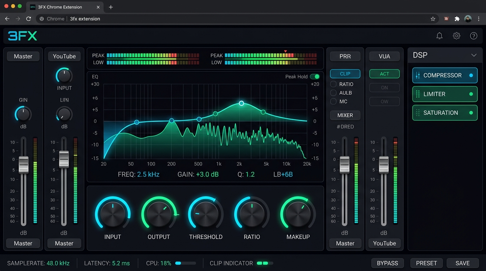

The Professional Mastering Suite for Google Chrome
Transform any browser tab into an elite recording studio. Surgical 8-band dynamic EQ, vintage tape saturation, mastering compression, convolution reverb, and per-tab multi-channel mixing with 0ms perceived latency.

8+
STUDIO DSP PROCESSORS
< 2ms
AUDIO WORKLET LATENCY
100%
OFFLINE & LOCAL PRIVACY
5
LOCALIZED LANGUAGES
The Complete Studio Effect Rack
Every processor is powered by custom Web AudioWorklet DSP code running in high-priority dedicated audio threads for zero glitching, pristine fidelity, and real-time response.
Parametric & Dynamic EQ
8 fully configurable bands (Low Cut, Low Shelf, Peaking, Notch, High Shelf, High Cut) with individual Q control, real-time FFT spectrum overlay, and per-band dynamic compression thresholds.
Vintage Tape Machine
Authentic tape hysteresis saturation curves, subtle wow and flutter pitch modulation, analog warmth, cassette motor drift, and vinyl tape stop deceleration with natural audio inertia.
Studio Dynamics Compressor
Professional feed-forward peak & RMS compression. Features interactive transfer curve graph, real-time gain reduction history timeline, variable knee soft/hard curvature, and auto-makeup gain.
Stereo & Slowed Reverb
Algorithmic Schroeder-Moorer reverberation with room size, high-frequency damping, pre-delay, and sidechain ducking. Includes one-click Chopped & Screwed playback speed synchronization.
Texturizer & Bitcrusher
Dial in vintage 8-bit / 12-bit sampler crunch, linear downsampling aliasing, and layer procedural noise textures (vinyl crackle, vintage tape hiss, dust) for warm lo-fi character.
Spatializer & Imager
Expand narrow stereo tracks into broad cinematic soundscapes using Haas effect cross-feed delays, binaural spatial widening, phase correlation adjustment, and stereo balance control.
Sub-Bass Synthesizer
Pumps deep low-end energy into laptop speakers and headphones. Generates targeted sub-harmonics below the original fundamental frequency with saturation and low-end tightness.
Master True Peak Limiter
Brickwall safety limiter with lookahead buffers to eliminate inter-sample peaks (ISPs) and digital clipping distortion, guaranteeing clean volume enhancement across loud media.
Full Multi-Channel Mixing Console
Forget one-size-fits-all global equalizers. 3FX automatically discovers every media-playing tab in Google Chrome and creates an independent hardware-style channel strip for each one.
- Independent Volume & Panning: Balance YouTube commentary while music plays softly in Spotify.
- Dedicated Effect Racks: Put warm tape saturation on a podcast, heavy bass boost on electronic music, and clean dialog EQ on Netflix.
- Site Memory Engine: 3FX remembers your preferred mastering chain for each domain. Return to YouTube or SoundCloud, and your custom rack loads automatically.
Studio Audio Visualizers
Monitor your audio with GPU-accelerated real-time visualizers powered by WebGL and Canvas 2D. Get instant visual confirmation of your frequency balance, stereo image, and phase correlation.
- 3D FFT Spectrum Analyzer: High-resolution 2048-point fast Fourier transform displaying frequency distribution from 20 Hz to 20 kHz.
- Circular Goniometer & Stereometer: Detect mono incompatibility, phase cancellation, and stereo field spread.
- Time-Domain Oscilloscope: Inspect transient peaks and analog waveform symmetry in real time.
Live Theme Builder & Studio Sizing
Tailor 3FX to match your hardware studio aesthetic. Customize colors, glow effects, typography, and button curvatures with live preview.
- Sizing Presets: Instantly switch between Compact (for laptop screens), Studio (balanced desktop), and Ultra (high-density workstations).
- Studio Scale Multipliers: Scale knobs, faders, text, and SVG paths proportionally with locked unit safety.
- Interactive Element Highlighting: Click any parameter token in the builder to highlight its live element in the UI.
Everything You Need to Know
tabCapture API in combination with a high-performance Offscreen document and isolated AudioWorklet DSP nodes. Audio processing executes on dedicated hardware threads, bypassing the main browser render loop for zero audio glitching or perceptual latency.